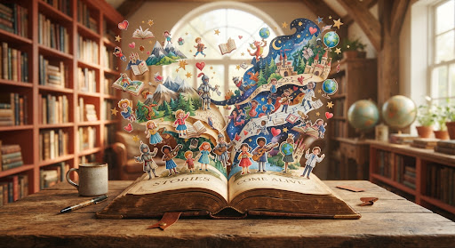
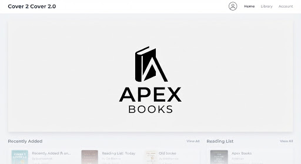
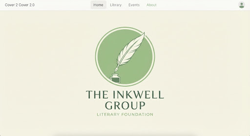
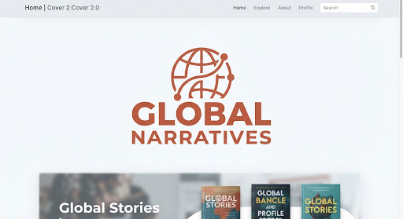

✦
Interactive Sessions
Engage directly with authors in collaborative writing pods.
Where Every Story Finds a Family.
Join us at The Central Library Commons for an immersive journey through modern literature, interactive storytelling, and community dialogue.

Supported by our cultural partners



The festival vision
Cover to Cover 2.0 isn't just a book fair—it's a living document of our collective imagination. Readers, writers, lifelong bibliophiles, and curious newcomers become active participants.
Through hands-on workshops, live-illustrated panels, and blind-date-with-a-book exchanges, the festival bridges the printed page and the modern interactive experience.
Engage directly with authors in collaborative writing pods.
Meet book clubs and reading circles from across the city.
Festival schedule
A single day of hands-on activities, live performance, and conversations.
Sunday, September 6, 2026 · The Central Library Commons
9:00 AM · Opening Chapter
10:00 AM · Interactive Session
Transform literary classics into three-dimensional sculptures with tactile artists.
11:45 AM · Community Activity
Discover a new genre through seven-minute encounters with fellow readers.
2:00 PM · Main Stage
Five poets perform with interactive prompts supplied by the audience.
4:30 PM · Workshop
Twenty writers build a shared world and write its history together in real time.
Community
Find your next literary home among communities exploring classics, memoir, speculative fiction, and YA.
Foundational
Revisiting world literature through a modern, critical lens.
Non-fiction
Deep dives into personal essays and contemporary biographies.
Speculative
Mapping the future through science fiction and world-building.
Young adult
Celebrating high fantasy and contemporary coming-of-age reads.
Everything you need before arriving at Cover to Cover 2.0.
The Central Library Commons is in the heart of the Central District, beside the Metro Hub, with indoor gardens, lecture halls, and accessible routes.
Sessions run from 9:00 AM to 8:00 PM on Sunday, September 6. Registered attendees can stay for the evening social mixer until 10:00 PM.
Entry is open to everyone who registers. Keep your digital or printed ticket ready; selected workshops need pre-booking because space is limited.
Bring your curiosity, a tote bag for books, and a reusable water bottle. Bring a favourite book if you are joining Genre Speed Dating.
Secure your pass for one day of inspiration, connection, and the celebration of the written word on September 6, 2026.